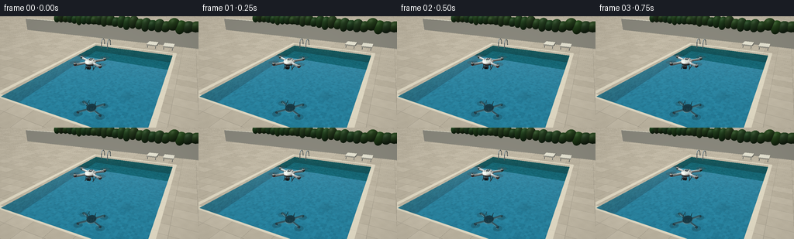
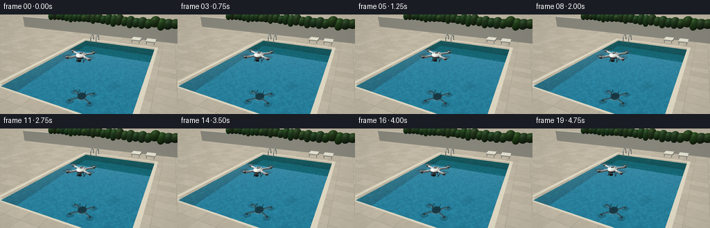

CODING AGENTS AS PIXEL WORLD MODELS
traex/GPT-6.1-Sol · phygen_059
点击播放 · 原生 RGB 像素
逐轮保存的候选
回放视频、检查图与代码变化。
每份候选均可单独播放。实际图片检查记录在下方工具轨迹中。
候选 01播放与检查图
点击播放 · 原生 RGB 像素


展开代码变化
--- 上一保存版本
+++ 本次保存版本
@@ -0,0 +1,318 @@
+from pathlib import Path
+import numpy as np
+from PIL import Image, ImageFilter
+import artifact_io
+
+ROOT=Path(__file__).resolve().parent
+W,H,SS=256,144,3
+WW,HH=W*SS,H*SS
+rng=np.random.default_rng(22)
+C=np.array([3.2,-5.6,3.6],np.float32)
+T=np.array([0,1.,.35],np.float32)
+F=T-C; F/=np.linalg.norm(F)
+R=np.cross(F,[0,0,1]); R/=np.linalg.norm(R)
+U=np.cross(R,F)
+xx,yy=np.meshgrid(np.arange(WW)+.5,np.arange(HH)+.5)
+D=F+(xx[...,None]-WW/2)/(230*SS)*R-(yy[...,None]-HH/2)/(230*SS)*U
+D/=np.linalg.norm(D,axis=-1)[...,None]
+D=D.astype(np.float32).reshape(-1,3)
+O=np.broadcast_to(C,D.shape)
+SUN=np.array([-0.45,-0.35,.82]); SUN/=np.linalg.norm(SUN)
+
+def hash2(x,y):
+ return np.mod(np.sin(x*127.1+y*311.7)*43758.5453,1)
+
+def sky(d):
+ a=np.clip(d[:,2],0,1)[:,None]
+ return np.array([.75,.85,.89])*(1-a)+np.array([.40,.65,.83])*a
+
+class Obj:
+ def __init__(self,kind,p,scale,color,q=None,end=None,rough=.4,metal=0):
+ self.kind=kind; self.p=np.array(p,float);self.scale=np.array(scale,float);self.col=np.array(color,float)
+ self.q=np.eye(3) if q is None else q; self.end=None if end is None else np.array(end,float)
+ self.rough=rough; self.metal=metal
+ def hit(self,o,d):
+ if self.kind=='ell':
+ oo=(o-self.p)@self.q/self.scale
+ dd=d@self.q/self.scale
+ a=np.sum(dd*dd,axis=-1);b=np.sum(oo*dd,axis=-1); c=np.sum(oo*oo,axis=-1)-1
+ disc=b*b-a*c
+ t=(-b-np.sqrt(np.maximum(disc,0)))/a
+ valid=(disc>=0)&(t>0.001)
+ t=np.where(valid,t,np.inf)
+ pos=o+d*np.where(valid,t,0)[:,None]
+ n=((pos-self.p)@self.q/(self.scale*self.scale))@self.q.T
+ n/=np.maximum(np.linalg.norm(n,axis=-1),1e-6)[:,None]
+ elif self.kind=='box':
+ oo=(o-self.p)@self.q; dd=d@self.q
+ div=np.where(np.abs(dd)<1e-8,1e-8,dd)
+ a=(-self.scale-oo)/div; b=(self.scale-oo)/div
+ near=np.minimum(a,b); far=np.maximum(a,b)
+ tn=np.max(near,axis=1); tf=np.min(far,axis=1)
+ valid=(tn<=tf)&(tf>0)&(tn>.001)
+ t=np.where(valid,tn,np.inf)
+ axis=np.argmax(near,axis=1)
+ n=np.zeros_like(o);n[np.arange(len(o)),axis]=-np.sign(dd[np.arange(len(o)),axis]);n=n@self.q.T
+ else:
+ ba=self.end-self.p; length=np.linalg.norm(ba); v=ba/length
+ oc=o-self.p; ov=oc@v; dv=d@v
+ perpendicular=oc-ov[:,None]*v; dp=d-dv[:,None]*v
+ a=np.sum(dp*dp,axis=1); b=np.sum(dp*perpendicular,axis=1);c=np.sum(perpendicular*perpendicular,axis=1)-float(self.scale)**2
+ disc=b*b-a*c
+ t=(-b-np.sqrt(np.maximum(disc,0)))/np.maximum(a,1e-10)
+ z=ov+t*dv
+ valid=(disc>=0)&(z>=0)&(z<=length)&(t>.001)
+ n=perpendicular+t[:,None]*dp
+ n/=np.maximum(np.linalg.norm(n,axis=1),1e-7)[:,None]
+ t=np.where(valid,t,np.inf)
+ # flat round end caps
+ for cap,sgn in [(0,-1),(length,1)]:
+ tc=(cap-ov)/np.where(abs(dv)<1e-7,1e-7,dv)
+ rad=oc+tc[:,None]*d-cap*v
+ hit=(tc>.001)&(np.sum(rad*rad,axis=1)<=float(self.scale)**2)&(tc<t)
+ t=np.where(hit,tc,t); n=np.where(hit[:,None],sgn*v,n)
+ return t,n
+
+def shade(obj,d,n,p):
+ lam=np.clip(n@SUN,0,1)
+ ambient=.40+.09*n[:,2]
+ light=ambient+.65*lam
+ half=SUN-d;half/=np.maximum(np.linalg.norm(half,axis=1),1e-8)[:,None]
+ spec=np.maximum(np.sum(n*half,axis=1),0)**(70 if obj.rough<.35 else 24)
+ col=obj.col[None,:]*light[:,None]
+ col+=spec[:,None]*(.32 if obj.rough<.35 else .08)
+ if obj.metal:
+ col+=obj.metal*.16*np.maximum(n[:,2],0)[:,None]*np.array([.70,.87,1.])
+ return np.clip(col,0,1)
+
+def trace_objects(o,d,objects,base=None):
+ dist=np.full(len(o),np.inf);col=np.zeros((len(o),3),float) if base is None else base.copy(); hits=np.zeros(len(o),bool)
+ for obj in objects:
+ t,n=obj.hit(o,d)
+ use=t<dist
+ if use.any():
+ pp=o[use]+d[use]*t[use,None]
+ col[use]=shade(obj,d[use],n[use],pp);dist[use]=t[use];hits[use]=True
+ return col,hits,dist
+
+# Camera-to-water intersections, plus the swimming pool's travertine deck.
+tw=-C[2]/D[:,2]
+P=O+tw[:,None]*D
+water=(tw>0)&(np.abs(P[:,0])<2.70)&(P[:,1]>-2)&(P[:,1]<6)
+tdeck=(.12-C[2])/D[:,2]
+PD=O+tdeck[:,None]*D
+base=sky(D)
+floor_hit=(tdeck>0)
+xf,yf=PD[:,0],PD[:,1]
+ix=np.floor((xf+8)/.80);iy=np.floor((yf+6)/.55)
+variation=(hash2(ix,iy)-.5)*.045
+fine=(hash2(xf*87,yf*93)-.5)*.016
+vein=np.sin(xf*14+yf*3+np.sin(yf*7))*np.sin(xf*3-yf*11)*.008
+stone=np.array([.74,.705,.625])[None,:]+variation[:,None]+fine[:,None]+vein[:,None]
+seam=(np.mod(xf+8,.8)<.012)|(np.mod(yf+6,.55)<.012)
+stone[seam]*=.85
+base[floor_hit]=stone[floor_hit]
+# Cut a narrow, bright continuous stone coping band around the pool.
+coping=(np.abs(PD[:,0])<2.91)&(PD[:,1]>-2.21)&(PD[:,1]<6.21)&~((np.abs(PD[:,0])<2.70)&(PD[:,1]>-2)&(PD[:,1]<6))
+base[coping]=np.array([.88,.85,.76])+fine[coping,None]*.5
+joint=(np.mod(PD[:,1]+2.2,.62)<.010)|(np.mod(PD[:,0]+2.9,.62)<.010)
+base[coping&joint]*=.9
+
+# Submerged walls and tiled pool bottom, viewed through the clear water.
+Dw=D.copy();Dw[:,:2]*=.75;Dw[:,2]=-np.sqrt(np.maximum(1-np.sum(Dw[:,:2]**2,axis=1),.01))
+bottomdist=-1.35/Dw[:,2]
+under=P+bottomdist[:,None]*Dw
+# Find wall intersection before the bottom.
+wall=False*np.ones(len(D),bool)
+for axis,bound in [(0,-2.70),(0,2.70),(1,-2),(1,6)]:
+ td=(bound-P[:,axis])/np.where(abs(Dw[:,axis])<1e-8,1e-8,Dw[:,axis])
+ good=(td>.001)&(td<bottomdist)
+ under[good]=P[good]+td[good,None]*Dw[good]
+ bottomdist=np.where(good,td,bottomdist)
+ wall|=good
+ux,uy=under[:,0],under[:,1]
+# tiny blue ceramic tiles with pale grout, no choppy surface pattern
+ax=np.where(wall,under[:,0]+under[:,1],ux)
+ay=np.where(wall,under[:,2],uy)
+tilecol=hash2(np.floor(ax/.115),np.floor(ay/.115))
+color=np.array([.075,.48,.58])[None,:]+(tilecol[:,None]-.5)*np.array([.04,.08,.085])
+grout=(np.mod(ax,.115)<.004)|(np.mod(ay,.115)<.004)
+color[grout]=np.array([.17,.53,.59])
+color[wall]*=.75
+# Extremely subtle refracted illumination, compatible with a still surface.
+caustic=np.sin(ux*5+uy*2)*np.sin(uy*7-ux*1.3)
+color+=caustic[:,None]*.007
+color*=np.exp(-bottomdist[:,None]*np.array([.21,.065,.035]))
+# Mirror of the surrounding sky and distant landscaping on the water.
+DR=D.copy(); DR[:,2]*=-1
+reflection=sky(DR)
+tr=(8-P[:,1])/np.where(abs(DR[:,1])<1e-7,1e-7,DR[:,1])
+pr=P+tr[:,None]*DR
+hedge_ref=(tr>0)&(pr[:,2]>.25)&(pr[:,2]<1.8)&(abs(pr[:,0])<10)
+leaf=hash2(pr[:,0]*23,pr[:,2]*31)
+reflection[hedge_ref]=np.stack([.11+leaf*.018,.22+leaf*.035,.105+leaf*.018],axis=1)[hedge_ref]
+fres=.14+.86*(1-np.abs(D[:,2]))**5
+watercolor=color*(1-fres[:,None])+reflection*fres[:,None]
+base[water]=watercolor[water]
+
+# Low white stucco boundary and clipped, layered green planting.
+wallobj=Obj('box',[0,8.45,.51],[12,.17,.65],[.82,.81,.74],rough=.85)
+hedges=[]
+for k in range(35):
+ x=-8+k*.49
+ z=1.36+rng.uniform(-.08,.12)
+ hedges.append(Obj('ell',[x,8.55,z],[.43,.38,.48+rng.uniform(-.09,.11)], [.115+rng.random()*.035,.225+rng.random()*.05,.095+rng.random()*.026],rough=.9))
+# Limit garden intersection work to its image region.
+region=(PD[:,1]>7.9)|(D[:,2]>-.04)
+ids=np.flatnonzero(region)
+garden,gh,gd=trace_objects(O[ids],D[ids],[wallobj]+hedges,base[ids])
+base[ids]=garden
+
+# A few restrained architectural details: rear expansion joints and pool steps.
+# Metal ladder at the far left edge, reflecting two slender highlights.
+static=[]
+for x in [-2.1,-1.63]:
+ # handrail rises from pool side, curves represented by smooth short segments
+ pts=[[x,5.68,-.38],[x,5.68,.40],[x,5.78,.56],[x,5.98,.59],[x,6.18,.46],[x,6.25,.12]]
+ for a,b in zip(pts[:-1],pts[1:]):
+ static.append(Obj('cyl',a,.025,[.57,.65,.67],end=b,rough=.18,metal=.8))
+for z in [-.30,-.62,-.94]:
+ static.append(Obj('cyl',[-2.1,5.68,z],.026,[.42,.50,.54],end=[-1.63,5.68,z],rough=.22,metal=.7))
+# Two slim chaise lounges on the far deck, warm white fabric and aluminum frames.
+def yrot(a):
+ return np.array([[np.cos(a),0,np.sin(a)],[0,1,0],[-np.sin(a),0,np.cos(a)]])
+for x in [1.25,2.32]:
+ static.append(Obj('box',[x,7.05,.38],[.33,.59,.043],[.87,.86,.79],rough=.8))
+ for dx in [-.27,.27]:
+ for y in [6.6,7.40]:
+ static.append(Obj('cyl',[x+dx,y,.14],.019,[.57,.60,.59],end=[x+dx,y,.34],rough=.25,metal=.6))
+ # gently tilted backrest, local long axis in y
+ a=-.64;q=np.array([[1,0,0],[0,np.cos(a),-np.sin(a)],[0,np.sin(a),np.cos(a)]])
+ static.append(Obj('box',[x,7.78,.65],[.33,.38,.035],[.86,.85,.78],q=q,rough=.8))
+region=(PD[:,1]>5.2)&(PD[:,1]<8.6)
+ids=np.flatnonzero(region)
+scol,sh,st=trace_objects(O[ids],D[ids],static,base[ids]);base[ids]=scol
+# Warm foreground glints on coping, gentle lens vignette.
+
+# Craft a compact white camera quadcopter, with X arms and dark spinning rotors.
+def zrot(a):
+ return np.array([[np.cos(a),-np.sin(a),0],[np.sin(a),np.cos(a),0],[0,0,1]])
+
+def drone(time,props=True):
+ yaw=.22+.018*np.sin(time*1.5)
+ Q=zrot(yaw)
+ center=np.array([.035*np.sin(time*.9),.2+.015*np.sin(time*1.05),1.10+.025*np.sin(time*1.4)])
+ objs=[]
+ def point(p): return center+Q@np.array(p)
+ def ell(p,s,c,rough=.35,metal=0,q=None):
+ objs.append(Obj('ell',point(p),s,c,q=Q if q is None else Q@q,rough=rough,metal=metal))
+ def box(p,s,c,rough=.4,q=None):
+ objs.append(Obj('box',point(p),s,c,q=Q if q is None else Q@q,rough=rough))
+ def rod(a,b,r,c,rough=.4):
+ objs.append(Obj('cyl',point(a),r,c,end=point(b),rough=rough))
+ # bottom belly followed by a lustrous upper white shell
+ ell([0,0,-.034],[.215,.273,.082],[.18,.205,.22],rough=.3)
+ ell([0,0,.006],[.222,.287,.089],[.88,.89,.865],rough=.24)
+ ell([0,.075,.071],[.157,.155,.027],[.67,.71,.71],rough=.31)
+ box([0,.052,.094],[.062,.128,.003],[.26,.29,.30])
+ # small top indicator and vents
+ for x in [-.135,.135]:
+ for y in [-.035,.005,.045]:
+ box([x,y,.076],[.013,.010,.004],[.15,.18,.18])
+ ell([0,-.148,.079],[.015,.015,.005],[.11,.61,.24])
+ for k,(x,y) in enumerate([(-.49,-.41),(.49,-.41),(-.49,.41),(.49,.41)]):
+ rod([x*.30,y*.33,-.001],[x,y,-.016],.041,[.68,.73,.74])
+ rod([x*.34,y*.34,.025],[x*.93,y*.93,.021],.025,[.90,.92,.90])
+ ell([x,y,.015],[.066,.066,.055],[.24,.27,.28],rough=.23,metal=.5)
+ ell([x,y,.049],[.059,.059,.025],[.74,.77,.75],rough=.22)
+ # Rotors' translucent swept area, with two blurred main blade contours.
+ if props:
+ ell([x,y,.081],[.202,.202,.0018],[.205,.25,.27],rough=.7)
+ ang=time*37+1.4*k
+ ell([x,y,.085],[.188,.018,.0028],[.12,.15,.165],rough=.45,q=zrot(ang))
+ ell([x,y,.084],[.185,.022,.002],[.30,.33,.34],rough=.5,q=zrot(ang+.27))
+ ell([x,y,.088],[.022,.022,.015],[.17,.19,.205],rough=.18)
+ # red front, green rear status LEDs
+ ell([x,y-.049,-.024],[.020,.011,.013],[.82,.08,.045] if y<0 else [.05,.62,.25])
+ # small landing struts and two skids
+ for x in [-.16,.16]:
+ for y in [-.14,.17]:
+ rod([x*.8,y,-.05],[x,y,-.235],.011,[.20,.235,.25])
+ rod([x,-.23,-.236],[x,.24,-.236],.012,[.18,.20,.21])
+ # stabilized front-facing camera and polished circular lens
+ rod([0,-.195,-.053],[0,-.241,-.144],.031,[.35,.38,.39])
+ box([0,-.246,-.148],[.070,.055,.049],[.19,.21,.225],rough=.3)
+ rod([0,-.296,-.148],[0,-.318,-.148],.041,[.055,.067,.073],rough=.20)
+ ell([0,-.320,-.148],[.029,.007,.029],[.035,.12,.16],rough=.12)
+ ell([-.01,-.325,-.136],[.008,.003,.007],[.52,.71,.73],rough=.12)
+ return objs,center
+
+# Reflections are ray intersections with the actual 3D quadcopter, viewed from
+# its mirror camera under the water. Thus the reflected underside and altitude
+# evolve correctly rather than using a pasted screen-space flipped silhouette.
+frames=[]
+for i in range(20):
+ time=i/4
+ objs,center=drone(time)
+ img=base.copy()
+ # slightly diffuse, submerged drone shadow, distinct from its sharp mirror
+ shadowcenter=center[:2]-SUN[:2]/SUN[2]*(center[2]+1.35)
+ sd=((under[:,0]-shadowcenter[0])/.43)**2+((under[:,1]-shadowcenter[1])/.40)**2
+ shadow=np.exp(-sd*1.6)*.07
+ img[water]*=(1-shadow[water,None])
+ # regional ray intersection with mirrored viewing rays
+ q=P-center
+ b=np.sum(q*DR,axis=1);cc=np.sum(q*q,axis=1)-.97**2
+ discr=b*b-cc
+ selection=water&(discr>0)&(b<0)
+ ids=np.flatnonzero(selection)
+ if len(ids):
+ oo=P[ids]+DR[ids]*.001
+ rc,rh,rt=trace_objects(oo,DR[ids],objs)
+ rid=ids[rh]
+ # Mirror image slightly tinted by the blue surface, but crisp on still water.
+ strength=.68
+ mirrored=rc[rh]*np.array([.83,.96,1.0])
+ img[rid]=img[rid]*(1-strength)+mirrored*strength
+ # direct view of the quadcopter
+ q=O-center;b=np.sum(q*D,axis=1);disc=b*b-(np.sum(q*q,axis=1)-.97**2)
+ ids=np.flatnonzero((disc>0)&(b<0))
+ dc,dh,dt=trace_objects(O[ids],D[ids],objs)
+ img[ids[dh]]=dc[dh]
+ # Blend fast propeller disks to make them translucent instead of solid plates.
+ # Render a version without blades, then retain the visible body and motor hubs.
+ core,_=drone(time,props=False)
+ # Isolate the disks as intersections against the matching no-prop geometry.
+ corec,ch,ct=trace_objects(O[ids],D[ids],core)
+ disk=dh&((~ch)|(ct>dt+.003))
+ # Only flattened rotor geometry is at the closest distance in these pixels.
+ direct_points=O[ids]+D[ids]*np.where(dh,dt,0)[:,None]
+ disk &= abs(direct_points[:,2]-(center[2]+.083))<.010
+ did=ids[disk]
+ behind=img[did].copy()
+ behind[:]=base[did]
+ behind[ch[disk]]=corec[disk][ch[disk]]
+ img[did]=behind*.69+dc[disk]*.31
+ # Reflection blur discs in the same manner.
+ rsel=selection
+ rids=np.flatnonzero(rsel)
+ if len(rids):
+ oo=P[rids]+DR[rids]*.001
+ cc2,ch2,ct2=trace_objects(oo,DR[rids],core)
+ rpoints=oo+DR[rids]*np.where(rh,rt,0)[:,None]
+ rdisk=rh&((~ch2)|(ct2>rt+.003))&(abs(rpoints[:,2]-(center[2]+.083))<.010)
+ rdid=rids[rdisk]
+ behind=base[rdid].copy()
+ hh=ch2[rdisk]
+ behind[hh]=behind[hh]*.32+cc2[rdisk][hh]*np.array([.83,.96,1.])*.68
+ img[rdid]=img[rdid]*.31+behind*.69
+ # photographic contrast, restrained warm daylight and antialiasing
+ arr=img.reshape(HH,WW,3)
+ vignette=1-.055*((xx-WW/2)/(WW/2))**2-.028*((yy-HH/2)/(HH/2))**2
+ arr*=vignette[...,None]
+ arr=np.clip(arr,0,1)
+ arr=arr**.93
+ out=Image.fromarray(np.uint8(arr*255+.5)).resize((W,H),Image.Resampling.LANCZOS)
+ frames.append(np.asarray(out))
+ print(f'frame {i+1}/20',flush=True)
+artifact_io.save(np.stack(frames).astype(np.uint8),ROOT)
可观测工具轨迹
实际执行的命令与返回图片。
命令 1exit 0
/bin/bash -lc "ls -la && cat prompt.txt && printf '\\n--- RULES ---\\n' && cat GENERATION_RULES.md && printf '\\n--- SPEC ---\\n' && cat task_spec.json"
命令 2exit 0
/bin/bash -lc "cat artifact_io.py && python - <<'PY'
import numpy, PIL
print('numpy',numpy.__version__)
PY"命令 3exit 0
/bin/bash -lc "python - <<'PY' import numpy as np C=np.array([3.2,-5.6,3.6]); T=np.array([0,1.,.35]); fw=(T-C);fw/=np.linalg.norm(fw);rt=np.cross(fw,[0,0,1]);rt/=np.linalg.norm(rt);up=np.cross(rt,fw) for p in [[0,.2,1.], [0,.2,-1],[0,.2,0],[-2.5,-1.7,0],[2.5,-1.7,0],[-2.5,6,0],[2.5,6,0]]: v=np.array(p)-C; d=v@fw;print(p,128+230*(v@rt)/d,72-230*(v@up)/d) PY"
命令 4exit 0
/bin/bash -lc "cat > generate.py <<'PY'
from pathlib import Path
import numpy as np
from PIL import Image, ImageFilter
import artifact_io
ROOT=Path(__file__).resolve().parent
W,H,SS=256,144,3
WW,HH=W*SS,H*SS
rng=np.random.default_rng(22)
C=np.array([3.2,-5.6,3.6],np.float32)
T=np.array([0,1.,.35],np.float32)
F=T-C; F/=np.linalg.norm(F)
R=np.cross(F,[0,0,1]); R/=np.linalg.norm(R)
U=np.cross(R,F)
xx,yy=np.meshgrid(np.arange(WW)+.5,np.arange(HH)+.5)
D=F+(xx[...,None]-WW/2)/(230*SS)*R-(yy[...,None]-HH/2)/(230*SS)*U
D/=np.linalg.norm(D,axis=-1)[...,None]
D=D.astype(np.float32).reshape(-1,3)
O=np.broadcast_to(C,D.shape)
SUN=np.array([-0.45,-0.35,.82]); SUN/=np.linalg.norm(SUN)
def hash2(x,y):
return np.mod(np.sin(x*127.1+y*311.7)*43758.5453,1)
def sky(d):
a=np.clip(d[:,2],0,1)[:,None]
return np.array([.75,.85,.89])*(1-a)+np.array([.40,.65,.83])*a
class Obj:
def __init__(self,kind,p,scale,color,q=None,end=None,rough=.4,metal=0):
self.kind=kind; self.p=np.array(p,float);self.scale=np.array(scale,float);self.col=np.array(color,float)
self.q=np.eye(3) if q is None else q; self.end=None if end is None else np.array(end,float)
self.rough=rough; self.metal=metal
def hit(self,o,d):
if self.kind=='ell':
oo=(o-self.p)@self.q/self.scale
dd=d@self.q/self.scale
a=np.sum(dd*dd,axis=-1);b=np.sum(oo*dd,axis=-1); c=np.sum(oo*oo,axis=-1)-1
disc=b*b-a*c
t=(-b-np.sqrt(np.maximum(disc,0)))/a
valid=(disc>=0)&(t>0.001)
t=np.where(valid,t,np.inf)
pos=o+d*np.where(valid,t,0)[:,None]
n=((pos-self.p)@self.q/(self.scale*self.scale))@self.q.T
n/=np.maximum(np.linalg.norm(n,axis=-1),1e-6)[:,None]
elif self.kind=='box':
oo=(o-self.p)@self.q; dd=d@self.q
div=np.where(np.abs(dd)<1e-8,1e-8,dd)
a=(-self.scale-oo)/div; b=(self.scale-oo)/div
near=np.minimum(a,b); far=np.maximum(a,b)
tn=np.max(near,axis=1); tf=np.min(far,axis=1)
valid=(tn<=tf)&(tf>0)&(tn>.001)
t=np.where(valid,tn,np.inf)
axis=np.argmax(near,axis=1)
n=np.zeros_like(o);n[np.arange(len(o)),axis]=-np.sign(dd[np.arange(len(o)),axis]);n=n@self.q.T
else:
ba=self.end-self.p; length=np.linalg.norm(ba); v=ba/length
oc=o-self.p; ov=oc@v; dv=d@v
perpendicular=oc-ov[:,None]*v; dp=d-dv[:,None]*v
a=np.sum(dp*dp,axis=1); b=np.sum(dp*perpendicular,axis=1);c=np.sum(perpendicular*perpendicular,axis=1)-float(self.scale)**2
disc=b*b-a*c
t=(-b-np.sqrt(np.maximum(disc,0)))/np.maximum(a,1e-10)
z=ov+t*dv
valid=(disc>=0)&(z>=0)&(z<=length)&(t>.001)
n=perpendicular+t[:,None]*dp
n/=np.maximum(np.linalg.norm(n,axis=1),1e-7)[:,None]
t=np.where(valid,t,np.inf)
# flat round end caps
for cap,sgn in [(0,-1),(length,1)]:
tc=(cap-ov)/np.where(abs(dv)<1e-7,1e-7,dv)
rad=oc+tc[:,None]*d-cap*v
hit=(tc>.001)&(np.sum(rad*rad,axis=1)<=float(self.scale)**2)&(tc<t)
t=np.where(hit,tc,t); n=np.where(hit[:,None],sgn*v,n)
return t,n
def shade(obj,d,n,p):
lam=np.clip(n@SUN,0,1)
ambient=.40+.09*n[:,2]
light=ambient+.65*lam
half=SUN-d;half/=np.maximum(np.linalg.norm(half,axis=1),1e-8)[:,None]
spec=np.maximum(np.sum(n*half,axis=1),0)**(70 if obj.rough<.35 else 24)
col=obj.col[None,:]*light[:,None]
col+=spec[:,None]*(.32 if obj.rough<.35 else .08)
if obj.metal:
col+=obj.metal*.16*np.maximum(n[:,2],0)[:,None]*np.array([.70,.87,1.])
return np.clip(col,0,1)
def trace_objects(o,d,objects,base=None):
dist=np.full(len(o),np.inf);col=np.zeros((len(o),3),float) if base is None else base.copy(); hits=np.zeros(len(o),bool)
for obj in objects:
t,n=obj.hit(o,d)
use=t<dist
if use.any():
pp=o[use]+d[use]*t[use,None]
col[use]=shade(obj,d[use],n[use],pp);dist[use]=t[use];hits[use]=True
return col,hits,dist
# Camera-to-water intersections, plus the swimming pool's travertine deck.
tw=-C[2]/D[:,2]
P=O+tw[:,None]*D
water=(tw>0)&(np.abs(P[:,0])<2.70)&(P[:,1]>-2)&(P[:,1]<6)
tdeck=(.12-C[2])/D[:,2]
PD=O+tdeck[:,None]*D
base=sky(D)
floor_hit=(tdeck>0)
xf,yf=PD[:,0],PD[:,1]
ix=np.floor((xf+8)/.80);iy=np.floor((yf+6)/.55)
variation=(hash2(ix,iy)-.5)*.045
fine=(hash2(xf*87,yf*93)-.5)*.016
vein=np.sin(xf*14+yf*3+np.sin(yf*7))*np.sin(xf*3-yf*11)*.008
stone=np.array([.74,.705,.625])[None,:]+variation[:,None]+fine[:,None]+vein[:,None]
seam=(np.mod(xf+8,.8)<.012)|(np.mod(yf+6,.55)<.012)
stone[seam]*=.85
base[floor_hit]=stone[floor_hit]
# Cut a narrow, bright continuous stone coping band around the pool.
coping=(np.abs(PD[:,0])<2.91)&(PD[:,1]>-2.21)&(PD[:,1]<6.21)&~((np.abs(PD[:,0])<2.70)&(PD[:,1]>-2)&(PD[:,1]<6))
base[coping]=np.array([.88,.85,.76])+fine[coping,None]*.5
joint=(np.mod(PD[:,1]+2.2,.62)<.010)|(np.mod(PD[:,0]+2.9,.62)<.010)
base[coping&joint]*=.9
# Submerged walls and tiled pool bottom, viewed through the clear water.
Dw=D.copy();Dw[:,:2]*=.75;Dw[:,2]=-np.sqrt(np.maximum(1-np.sum(Dw[:,:2]**2,axis=1),.01))
bottomdist=-1.35/Dw[:,2]
under=P+bottomdist[:,None]*Dw
# Find wall intersection before the bottom.
wall=False*np.ones(len(D),bool)
for axis,bound in [(0,-2.70),(0,2.70),(1,-2),(1,6)]:
td=(bound-P[:,axis])/np.where(abs(Dw[:,axis])<1e-8,1e-8,Dw[:,axis])
good=(td>.001)&(td<bottomdist)
under[good]=P[good]+td[good,None]*Dw[good]
bottomdist=np.where(good,td,bottomdist)
wall|=good
ux,uy=under[:,0],under[:,1]
# tiny blue ceramic tiles with pale grout, no choppy surface pattern
ax=np.where(wall,under[:,0]+under[:,1],ux)
ay=np.where(wall,under[:,2],uy)
tilecol=hash2(np.floor(ax/.115),np.floor(ay/.115))
color=np.array([.075,.48,.58])[None,:]+(tilecol[:,None]-.5)*np.array([.04,.08,.085])
grout=(np.mod(ax,.115)<.004)|(np.mod(ay,.115)<.004)
color[grout]=np.array([.17,.53,.59])
color[wall]*=.75
# Extremely subtle refracted illumination, compatible with a still surface.
caustic=np.sin(ux*5+uy*2)*np.sin(uy*7-ux*1.3)
color+=caustic[:,None]*.007
color*=np.exp(-bottomdist[:,None]*np.array([.21,.065,.035]))
# Mirror of the surrounding sky and distant landscaping on the water.
DR=D.copy(); DR[:,2]*=-1
reflection=sky(DR)
tr=(8-P[:,1])/np.where(abs(DR[:,1])<1e-7,1e-7,DR[:,1])
pr=P+tr[:,None]*DR
hedge_ref=(tr>0)&(pr[:,2]>.25)&(pr[:,2]<1.8)&(abs(pr[:,0])<10)
leaf=hash2(pr[:,0]*23,pr[:,2]*31)
reflection[hedge_ref]=np.stack([.11+leaf*.018,.22+leaf*.035,.105+leaf*.018],axis=1)[hedge_ref]
fres=.14+.86*(1-np.abs(D[:,2]))**5
watercolor=color*(1-fres[:,None])+reflection*fres[:,None]
base[water]=watercolor[water]
# Low white stucco boundary and clipped, layered green planting.
wallobj=Obj('box',[0,8.45,.51],[12,.17,.65],[.82,.81,.74],rough=.85)
hedges=[]
for k in range(35):
x=-8+k*.49
z=1.36+rng.uniform(-.08,.12)
hedges.append(Obj('ell',[x,8.55,z],[.43,.38,.48+rng.uniform(-.09,.11)], [.115+rng.random()*.035,.225+rng.random()*.05,.095+rng.random()*.026],rough=.9))
# Limit garden intersection work to its image region.
region=(PD[:,1]>7.9)|(D[:,2]>-.04)
ids=np.flatnonzero(region)
garden,gh,gd=trace_objects(O[ids],D[ids],[wallobj]+hedges,base[ids])
base[ids]=garden
# A few restrained architectural details: rear expansion joints and pool steps.
# Metal ladder at the far left edge, reflecting two slender highlights.
static=[]
for x in [-2.1,-1.63]:
# handrail rises from pool side, curves represented by smooth short segments
pts=[[x,5.68,-.38],[x,5.68,.40],[x,5.78,.56],[x,5.98,.59],[x,6.18,.46],[x,6.25,.12]]
for a,b in zip(pts[:-1],pts[1:]):
static.append(Obj('cyl',a,.025,[.57,.65,.67],end=b,rough=.18,metal=.8))
for z in [-.30,-.62,-.94]:
static.append(Obj('cyl',[-2.1,5.68,z],.026,[.42,.50,.54],end=[-1.63,5.68,z],rough=.22,metal=.7))
# Two slim chaise lounges on the far deck, warm white fabric and aluminum frames.
def yrot(a):
return np.array([[np.cos(a),0,np.sin(a)],[0,1,0],[-np.sin(a),0,np.cos(a)]])
for x in [1.25,2.32]:
static.append(Obj('box',[x,7.05,.38],[.33,.59,.043],[.87,.86,.79],rough=.8))
for dx in [-.27,.27]:
for y in [6.6,7.40]:
static.append(Obj('cyl',[x+dx,y,.14],.019,[.57,.60,.59],end=[x+dx,y,.34],rough=.25,metal=.6))
# gently tilted backrest, local long axis in y
a=-.64;q=np.array([[1,0,0],[0,np.cos(a),-np.sin(a)],[0,np.sin(a),np.cos(a)]])
static.append(Obj('box',[x,7.78,.65],[.33,.38,.035],[.86,.85,.78],q=q,rough=.8))
region=(PD[:,1]>5.2)&(PD[:,1]<8.6)
ids=np.flatnonzero(region)
scol,sh,st=trace_objects(O[ids],D[ids],static,base[ids]);base[ids]=scol
# Warm foreground glints on coping, gentle lens vignette.
# Craft a compact white camera quadcopter, with X arms and dark spinning rotors.
def zrot(a):
return np.array([[np.cos(a),-np.sin(a),0],[np.sin(a),np.cos(a),0],[0,0,1]])
def drone(time,props=True):
yaw=.22+.018*np.sin(time*1.5)
Q=zrot(yaw)
center=np.array([.035*np.sin(time*.9),.2+.015*np.sin(time*1.05),1.10+.025*np.sin(time*1.4)])
objs=[]
def point(p): return center+Q@np.array(p)
def ell(p,s,c,rough=.35,metal=0,q=None):
objs.append(Obj('ell',point(p),s,c,q=Q if q is None else Q@q,rough=rough,metal=metal))
def box(p,s,c,rough=.4,q=None):
objs.append(Obj('box',point(p),s,c,q=Q if q is None else Q@q,rough=rough))
def rod(a,b,r,c,rough=.4):
objs.append(Obj('cyl',point(a),r,c,end=point(b),rough=rough))
# bottom belly followed by a lustrous upper white shell
ell([0,0,-.034],[.215,.273,.082],[.18,.205,.22],rough=.3)
ell([0,0,.006],[.222,.287,.089],[.88,.89,.865],rough=.24)
ell([0,.075,.071],[.157,.155,.027],[.67,.71,.71],rough=.31)
box([0,.052,.094],[.062,.128,.003],[.26,.29,.30])
# small top indicator and vents
for x in [-.135,.135]:
for y in [-.035,.005,.045]:
box([x,y,.076],[.013,.010,.004],[.15,.18,.18])
ell([0,-.148,.079],[.015,.015,.005],[.11,.61,.24])
for k,(x,y) in enumerate([(-.49,-.41),(.49,-.41),(-.49,.41),(.49,.41)]):
rod([x*.30,y*.33,-.001],[x,y,-.016],.041,[.68,.73,.74])
rod([x*.34,y*.34,.025],[x*.93,y*.93,.021],.025,[.90,.92,.90])
ell([x,y,.015],[.066,.066,.055],[.24,.27,.28],rough=.23,metal=.5)
ell([x,y,.049],[.059,.059,.025],[.74,.77,.75],rough=.22)
# Rotors' translucent swept area, with two blurred main blade contours.
if props:
ell([x,y,.081],[.202,.202,.0018],[.205,.25,.27],rough=.7)
ang=time*37+1.4*k
ell([x,y,.085],[.188,.018,.0028],[.12,.15,.165],rough=.45,q=zrot(ang))
ell([x,y,.084],[.185,.022,.002],[.30,.33,.34],rough=.5,q=zrot(ang+.27))
ell([x,y,.088],[.022,.022,.015],[.17,.19,.205],rough=.18)
# red front, green rear status LEDs
ell([x,y-.049,-.024],[.020,.011,.013],[.82,.08,.045] if y<0 else [.05,.62,.25])
# small landing struts and two skids
for x in [-.16,.16]:
for y in [-.14,.17]:
rod([x*.8,y,-.05],[x,y,-.235],.011,[.20,.235,.25])
rod([x,-.23,-.236],[x,.24,-.236],.012,[.18,.20,.21])
# stabilized front-facing camera and polished circular lens
rod([0,-.195,-.053],[0,-.241,-.144],.031,[.35,.38,.39])
box([0,-.246,-.148],[.070,.055,.049],[.19,.21,.225],rough=.3)
rod([0,-.296,-.148],[0,-.318,-.148],.041,[.055,.067,.073],rough=.20)
ell([0,-.320,-.148],[.029,.007,.029],[.035,.12,.16],rough=.12)
ell([-.01,-.325,-.136],[.008,.003,.007],[.52,.71,.73],rough=.12)
return objs,center
# Reflections are ray intersections with the actual 3D quadcopter, viewed from
# its mirror camera under the water. Thus the reflected underside and altitude
# evolve correctly rather than using a pasted screen-space flipped silhouette.
frames=[]
for i in range(20):
time=i/4
objs,center=drone(time)
img=base.copy()
# slightly diffuse, submerged drone shadow, distinct from its sharp mirror
shadowcenter=center[:2]-SUN[:2]/SUN[2]*(center[2]+1.35)
sd=((under[:,0]-shadowcenter[0])/.43)**2+((under[:,1]-shadowcenter[1])/.40)**2
shadow=np.exp(-sd*1.6)*.07
img[water]*=(1-shadow[water,None])
# regional ray intersection with mirrored viewing rays
q=P-center
b=np.sum(q*DR,axis=1);cc=np.sum(q*q,axis=1)-.97**2
discr=b*b-cc
selection=water&(discr>0)&(b<0)
ids=np.flatnonzero(selection)
if len(ids):
oo=P[ids]+DR[ids]*.001
rc,rh,rt=trace_objects(oo,DR[ids],objs)
rid=ids[rh]
# Mirror image slightly tinted by the blue surface, but crisp on still water.
strength=.68
mirrored=rc[rh]*np.array([.83,.96,1.0])
img[rid]=img[rid]*(1-strength)+mirrored*strength
# direct view of the quadcopter
q=O-center;b=np.sum(q*D,axis=1);disc=b*b-(np.sum(q*q,axis=1)-.97**2)
ids=np.flatnonzero((disc>0)&(b<0))
dc,dh,dt=trace_objects(O[ids],D[ids],objs)
img[ids[dh]]=dc[dh]
# Blend fast propeller disks to make them translucent instead of solid plates.
# Render a version without blades, then retain the visible body and motor hubs.
core,_=drone(time,props=False)
# Isolate the disks as intersections against the matching no-prop geometry.
corec,ch,ct=trace_objects(O[ids],D[ids],core)
disk=dh&((~ch)|(ct>dt+.003))
# Only flattened rotor geometry is at the closest distance in these pixels.
direct_points=O[ids]+D[ids]*np.where(dh,dt,0)[:,None]
disk &= abs(direct_points[:,2]-(center[2]+.083))<.010
did=ids[disk]
behind=img[did].copy()
behind[:]=base[did]
behind[ch[disk]]=corec[disk][ch[disk]]
img[did]=behind*.69+dc[disk]*.31
# Reflection blur discs in the same manner.
rsel=selection
rids=np.flatnonzero(rsel)
if len(rids):
oo=P[rids]+DR[rids]*.001
cc2,ch2,ct2=trace_objects(oo,DR[rids],core)
rpoints=oo+DR[rids]*np.where(rh,rt,0)[:,None]
rdisk=rh&((~ch2)|(ct2>rt+.003))&(abs(rpoints[:,2]-(center[2]+.083))<.010)
rdid=rids[rdisk]
behind=base[rdid].copy()
hh=ch2[rdisk]
behind[hh]=behind[hh]*.32+cc2[rdisk][hh]*np.array([.83,.96,1.])*.68
img[rdid]=img[rdid]*.31+behind*.69
# photographic contrast, restrained warm daylight and antialiasing
arr=img.reshape(HH,WW,3)
vignette=1-.055*((xx-WW/2)/(WW/2))**2-.028*((yy-HH/2)/(HH/2))**2
arr*=vignette[...,None]
arr=np.clip(arr,0,1)
arr=arr**.93
out=Image.fromarray(np.uint8(arr*255+.5)).resize((W,H),Image.Resampling.LANCZOS)
frames.append(np.asarray(out))
print(f'frame {i+1}/20',flush=True)
artifact_io.save(np.stack(frames).astype(np.uint8),ROOT)
PY
OPENBLAS_NUM_THREADS=1 python generate.py"命令 5exit 0
/bin/bash -lc 'command -v ffmpeg || true && ls -lh pixels.npz index.html frames/00.png'
视觉工具实际返回图片 1

保存候选 1 份；完成命令 5 次；可验证图片返回 1 张。原始 API 响应与完整日志保留在本地。